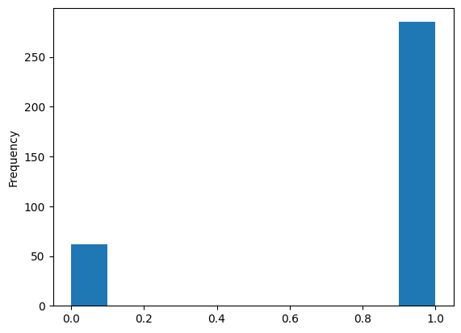

The data analyzed in this project is compiled by the Graphic Narrative Corpus (GNC). The dataset includes metadata such as the book title, author, illustrator, genre, publication date, and language. I might investigate the genres present in graphic novels or investigate trends in graphic novels during a time period.
I am interested in exploring how graphic novels have evolved over time. I do not know very much about the history of graphic novels, thus I want to take a broad approach to exploring this dataset.
Question(s)
What patterns/trends can be observed in the original language of graphic novel publications over time?
Why is a particular genre more popular than others?
If a popular genre is replaced by another genre over time, why?
Why is one type of adaptation more popular than other forms of adaptation for graphic novels?
Why are some graphic novels adapted more often than others?
Explore
# download dataset zip file from source linkimport requestsimport pandas as pdurl ='https://groups.uni-paderborn.de/graphic-literature/gncorpus/GNC_DB.zip'req = requests.get(url)filename = url.split('/')[-1]withopen(filename, 'wb') as output_file: output_file.write(req.content)print('Download Complete')
Download Complete
NOTE: You do not need to run the code below since the files are already in the directory
# extract datasets from zip folder# the contents of the zipfile should now be extracted in the directoryfrom zipfile import ZipFilewith ZipFile("/home/jovyan/FinalProject/dh140finalproject/GNC_DB.zip", 'r') as zObject: zObject.extractall( path="/home/jovyan/FinalProject/dh140finalproject")
After extracting the contents of the zip folder, there should be multiple .csv files about different categories. A few examples of these categories include Author, Book, BookGenre, Ethnicity, and Publisher. “Author.csv” and “Book.csv” appear to contain a combination of information in their columns. The columns labels are removed from the datasets, but are explained in the file “GNCScheme.pdf”. Thus, these column labels will need to be inserted in the files that will be examined for visualization purposes.
In the tables below I will visualize what these tables contain and examine if there are any interesting data points, missing values, and determine how to use the given data for analysis.
NOTE: Comment the first 3 lines and uncomment the last 3 lines if running in Binder
Notice there are no column names. This will make visualizations difficult to do and it is also hard to understand what these values mean just from looking at the table. Using “GNCScheme.pdf”, I will apply the corresponding column names for the datasets.
Note: Gender ID is 0 = female, 1 = male (based on Gender.csv).
Summary of data and statistics
# Let's being with getting a summary/overview of the Author.csv datasetauthor_db.describe()
ID
Gender_ID
count
352.000000
347.000000
mean
223.639205
0.821326
std
132.653407
0.383633
min
0.000000
0.000000
25%
111.750000
1.000000
50%
220.000000
1.000000
75%
346.250000
1.000000
max
450.000000
1.000000
The only numerical data in this dataframe is the Gender_ID column, which represents the genders coded as such: 0 = female, 1 = male.
author_db["Gender_ID"].plot(kind="hist")
<Axes: ylabel='Frequency'>

# Let's examine some of the columns from Author.csv!print("Gender_ID:\n", author_db['Gender_ID'].value_counts(), '\n')print("CountryOfOriginID:\n", author_db['CountryOfOriginID'].value_counts(), '\n')print("Ethnicity:\n", author_db['Ethnicity'].value_counts(), '\n')
Gender_ID:
1.0 285
0.0 62
Name: Gender_ID, dtype: int64
CountryOfOriginID:
USA 192
UK 35
Canada 22
Japan 9
France 9
Philippines 3
Spain 3
Brazil 2
Italy 2
Russia 2
India 2
Belgium 2
Argentina 2
Peru 2
Greece 2
Australia 2
Turkey 1
Hungary 1
Germany 1
England 1
Vietnam 1
Chile 1
Lebanese Republic 1
Switzerland 1
Republic of Côte d'Ivoire 1
Guatemala 1
New Zealand 1
Taiwan 1
Croatia 1
Denmark 1
Israel 1
Iran 1
Sweden 1
Malta 1
Poland 1
South Korea 1
Mexico 1
Name: CountryOfOriginID, dtype: int64
Ethnicity:
White 261
Asian 25
Unknown 14
Hispanic Origin 10
African American 10
Other Race 4
Native American 1
Black 1
Name: Ethnicity, dtype: int64
I am unable to label the columns for this dataframe accurately. There are 23 columns, however, the documentation inn “GNCScheme.pdf” only lists 16 column labels, which does not match. Thus, it will be difficult to fully analyze the dataset as is. I cannot guess what all the columns are because many values are coded into numbers.
One possible option to consider is to remove the columns I am unsure of what they represent, which will limit some of my analysis.
For now, I will look at another dataset, Adaptation.csv, which looks at different adaptations of graphic novels (movie, tv series, novel, etc.).
I may be able to replace appearing values of BookID with their actual title for visualization purposes.
NOTE: I still need to look for missing data, check ratio of missing values, and determine if there is data to be removed or imputed.
Analysis
What patterns/trends can be observed in the original language of graphic novel publications over time?
Why is a particular genre more popular than others?
If a popular genre is replaced by another genre over time, why?
Why is one type of adaptation more popular than other forms of adaptation for graphic novels?
Why are some graphic novels adapted more often than others?
Plans for visualizations and analysis If I am able to graph using dates, I may be able to answer questions regarding trends over time.
Why is one type of adaptation more popular than other forms of adaptation for graphic novels?
Why are some graphic novels adapted more often than others? These two can be visualized from histograms. To discuss why, I may have to do some outside research about the graphic novels themselves and their popularity in pop culture and media.
The dataset source website has some of their own visualizations, I will ask if it is okay to use some of their own visualizations to answer/further support my own visualizations and analysis.